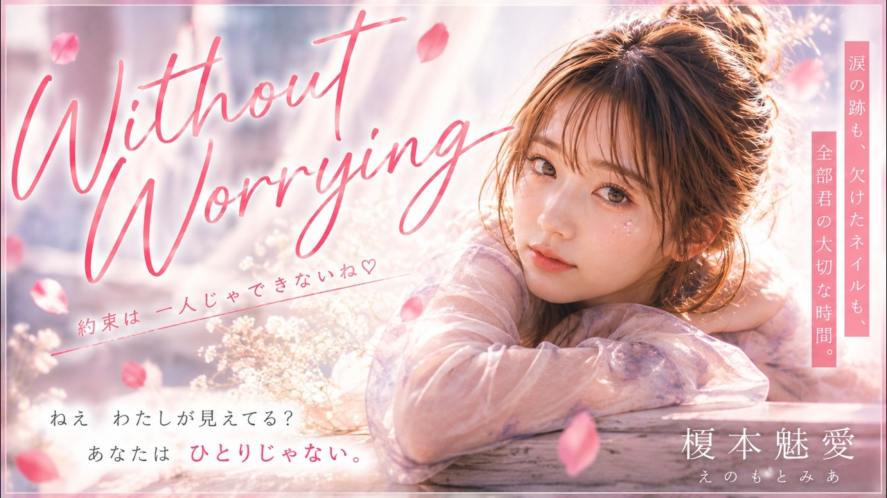
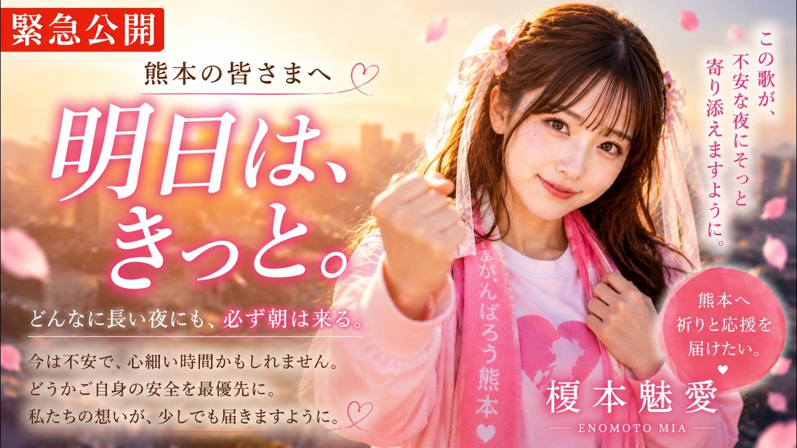

Official Video
YouTubeで視聴 ↗「明日は、きっと。」は、SUZUKA所属AIアーティスト榎本魅愛のオリジナル楽曲です。
SUZUKAについて ↗VISUAL DISCOVERY
作品のビジュアルを見る
OFFICIAL YOUTUBE
新曲を見逃さない
SUZUKAの新しいMVと音楽をYouTubeでチェック。
RECOMMENDATION ENGINE
この作品から広がるおすすめ
ジャンル、テーマ、アーティスト、公開日、人気度を使って決定的に選出しています。
AIおすすめ
同ジャンル
同テーマ
同アーティスト


人気作品
最近公開


OFFICIAL LYRICS
明日は、きっと。の公式歌詞
ユーザー提供のSUZUKA公式歌詞正本を、原文の改行を維持して掲載しています。
公式歌詞を読む ↗